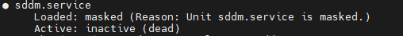

常见问题
1.关机断电后无法进入桌面
检查系统中实际安装的显示管理器，终端输入：
1 | # 列出所有显示管理器服务 |
解决步骤
1尝试修复原本的显示管理器
当前默认的显示管理器是 sddmsddm（Simple Desktop Display Manager）。这表明系统使用的是 SDDM
1.1检查 SDDM 状态（如果 SDDM-pkg完整未损坏或丢失）
终端中输入：
1 | sudo systemctl status sddm |
如果 SDDM 没有运行尝试重新启动它：

1 | sudo systemctl start sddm |
如果 SDDM 启动失败，查看具体的错误信息：
1 | journalctl -xe | grep sddm |
问题：
如果该服务禁用了
要取消对 sddm.service 的 mask，执行以下命令：
1 | sudo systemctl unmask sddm |
1 | sudo systemctl status sddm |
如果状态仍然为 inactive (dead)，继续下一步
尝试启动 SDDM 服务：
1 | sudo systemctl start sddm |
如果成功启动，可以将其设置为开机自启：
1 | sudo update-rc.d sddm defaults |
1.2 重新配置 SDDM（ SDDM-pkg损坏或丢失 ）
如果 SDDM 配置文件损坏或丢失，可以尝试重新配置：
1 | sudo dpkg-reconfigure sddm |
sddm 被标记为“已损坏或未完成安装”。这表明 sddm 的安装可能存在问题，或者某些必要的文件丢失了。以下是解决这个问题的步骤。
重新安装 SDDM
首先，尝试重新安装 sddm 以修复损坏的文件：
1 | sudo apt update |
--reinstall参数会重新安装 SDDM，覆盖可能损坏的文件。
重新配置 SDDM：
1 | sudo dpkg-reconfigure sddm |
在弹出的对话框中确认选择 SDDM 作为默认显示管理器。
检查 SDDM 状态
重新安装后，检查 SDDM 的状态：
1 | sudo systemctl status sddm |
如果状态为 active (running)，说明 SDDM 已成功启动。如果没有自动启动，手动启动它：
1 | sudo systemctl start sddm |
将其设置为开机自启：
由于 SDDM 使用的是 SysV init 脚本，可以通过以下命令确保其开机自启：
1 | sudo update-rc.d sddm defaults |
2. 检查 SDDM 日志(无用)
查看 SDDM 的日志文件以确认是否有错误信息：
1 | cat /var/log/sddm.log |
如果有错误信息，请根据提示进行修复。
3. 切换到其他显示管理器(推荐)
如果 SDDM 仍然无法正常工作，可以切换到其他显示管理器（如 GDM 或 LightDM）。
安装 GDM：
1 | sudo apt install gdm3 |
检查 GDM 的状态
首先检查 GDM 服务的状态：
1 | sudo systemctl status gdm3 |
- 如果输出为
inactive (dead)，说明 GDM 服务未启动。 - 如果有错误信息，请记录下来以便分析。
启动并启用 GDM
尝试手动启动 GDM 服务（成功！）：
1 | sudo systemctl start gdm3 |
将其设置为开机自启：
1 | sudo systemctl enable gdm3 |
确保 GDM 是默认显示管理器
重新配置显示管理器以确保 GDM 是默认选项：
1 | sudo dpkg-reconfigure gdm3 |
在弹出的对话框中选择 gdm3。
停止其他显示管理器
如果系统仍然尝试使用 SDDM 或其他显示管理器，需要停止并禁用它们。
停止 SDDM：
1 | sudo systemctl stop sddm |
如果有其他显示管理器（如 LightDM），同样停止并禁用它们：
1 | sudo systemctl stop lightdm |
总结：方法三方便简洁且本人运行之后成功，固推荐使用方法三
2.无法打开终端
在ubuntu中无法打开终端，提示未能执行默认终端，如下所示
可能原因
错误已经给出了提示，未能执行默认终端，更改默认项就可以了
步骤
在settings中找到Preferred Applications进入
3.烧录镜像中断，SD卡容量变小
如果你使用的TF卡在烧录镜像的时候中断或者出现异常，这时你会发现，其显示的容量变小了。比如明明是32G，现在显示才不到100M，快速格式化后还是显示100M。别急，对于这种情况，我们对TF卡进行高级格式化。
以下内容的操作系统/平台：Windows
步骤
**1.**运行分区工具：Win + R打开运行，输入【diskpart】。
1 | diskpart |
**2.**输入【list disk】列出电脑上所有磁盘，图中的磁盘3 大小为14G的就是我的标称32G的 TF卡。
1 | list disk |
**3.**删除磁盘分区：输入【select disk 3】命令选中要操作的目标磁盘。之后可以再次输入【list disk】确认磁盘3是否被选中（前面有星号）。==这里千万不要选错了，否则学习资料都没了==。
1 | select disk 3 |
4输入【clean】命令，删除磁盘分区。
1 | clean |
**5.**创建分区并标记为活动分区。
1 | create partition primary /*创建分区*/ |
**6.**快速格式化为你指定的格式，这里指定为exfat（这里列出了四种SD卡格式化时常见的文件系统格式及其特点，大家根据自己需要修改，本人选择的是FAT32）
1 | format quick fs=exfat /*格式化为exfat*/ |
FAT32
- 特点：
- 兼容性最强：几乎所有设备（相机、游戏机、车载系统等）均支持。
- 文件大小限制：单个文件不能超过 4GB。
- 容量限制：最大分区支持 32GB（部分工具可强制格式化更大容量，但稳定性下降）。
- 适用场景：小文件传输、老旧设备（如PS3、行车记录仪）。
exFAT
- 特点：
- 大文件支持：无4GB文件限制，适合存储高清视频、大型游戏。
- 大容量兼容：支持 128TB 以上的SD卡（如SDXC卡）。
- 跨平台性：Windows、macOS、安卓（需系统支持）、部分新款相机/游戏机（如PS5、Switch）。
- 缺点：老旧设备可能不识别（如安卓4.4以下需第三方软件）。
- 适用场景：现代设备间的数据共享（如无人机、GoPro）。
NTFS
- 特点：
- 高级功能：支持日志记录、权限控制、大文件和大容量。
- Windows 专用：在Windows系统中性能最佳。
- 兼容性差：macOS默认仅能读取（需第三方工具写入）；游戏机、相机通常不支持。
- 适用场景：仅Windows环境使用（如外接硬盘备份）。
ext2/ext3/ext4
- 特点：
- Linux 原生格式：ext4支持日志功能，数据恢复更安全。
- 跨平台限制：Windows和macOS需安装第三方驱动才能识别。
- 大文件/容量支持：无限制。
- 适用场景：Linux系统专用或技术爱好者使用。
APFS/HFS+
特点：
- macOS 专用：APFS为苹果现代系统优化，支持加密和快照。
- 兼容性极低：Windows和Linux需额外工具支持，其他设备通常不识别。
适用场景：仅Mac设备间的数据迁移。
**7.**现在，TF卡容量显示正常了。